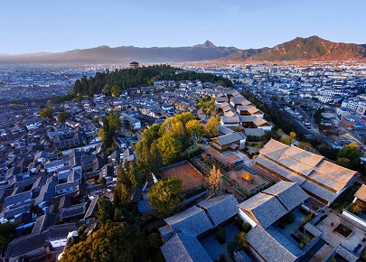
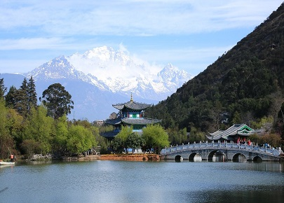

morly旅游网
我们来丽江，遇见自己，遗忘过往，漫步古城感受闲适光阴里的一花一木，让午后的一米阳光一下子照进心中最柔软的地方
如果说一千个读者心中有一千个哈姆雷特，那么一万个游客心中有一万个丽江也不为过。丽江是喧嚣的，你可以彻夜狂欢；丽江是宁静的，你可以坐在洒满阳光的院落发呆良久。这座充斥了爱与奇遇的风情古城，承载着满满的情意与感性。也许是丽江古城内小桥流水人家的柔软风情让人在静谧中左思右想，抑或是夜晚风格各异的酒吧让人魅惑张扬。不过，无论是蓝天白云，雪山潺流，炊烟人家，还是风情酒吧，闲适的一切生物，这一切怎能不让人为她张望，为她痴狂。
丽江古城内的街道依山傍水修建，以红色角砾岩铺就，有四方街、木府、五凤楼、黑龙潭、文昌宫、王丕震纪念馆、雪山书院、王家庄基督教堂、方国瑜故居、白马龙潭寺、顾彼得旧居、净莲寺、普贤寺等景点。丽江为第二批被批准的中国历史文化名城之一，是中国以整座古城申报世界文化遗产获得成功的两座古城之一。
丽江古城始建于宋末元初（13世纪后期），由丽江木氏先祖将统治中心由白沙古镇迁至现狮子山，开始营造房屋城池，称“大叶场” 。古城名称来源据说是因为丽江世袭统治者姓木，筑城势必如木字加框而成“困”字之故。丽江古城的纳西名称叫“巩本知”，“巩本”为仓廪，“知”即集市，丽江古城曾是仓廪集散之地。
丽江古城未受方九里，旁三门，国中九经九纬，经途九轨的中原建城复制影响。城中无规矩的道路网，无森严的城墙，古城布局中以三山为屏、一川相连；水系利用三河穿城、家家流水；街道布局经络设置有着曲、幽、窄、达的风格。丽江古城的格局是自发性的形成坐西北朝东南的朝向形式。
以水为核心的丽江古城因水的活用而呈现特有的水巷空间布局。桥梁密集是丽江古城最大的特色。在外部造型与结构上，古城民居揉合了中原建筑和藏族、白族建筑的技艺，形成了向上收分土石墙、迭落式屋顶、小青瓦、木构架等建筑手法，在建筑布局形式、建筑艺术手法等方面形成了独特的风格。民居大多为土木结构，比较常见的形式有以下几种：三坊一照壁、四合五天井、前后院、一进两院等几种形式。
 木府
木府原为丽江世袭土司木氏的衙署，位于古城狮子山东麓，始建于元代（公元1271～1368年），1998年重建后改为古城博物院。木府占地46亩，府内有大小房间共162间，中轴线长369米，三清殿、玉音楼、光碧楼、护法殿、万卷楼、议事厅、忠义坊由西向东排列井然。其内悬挂有历代皇帝钦赐的匾额十一块，反映了木氏家族的盛衰历史。讲述丽江木氏土司风云故事的电视剧《木府风云》就是在这里拍摄的。
方国瑜故居
方国瑜故居位于五一街71号、72号，由两重跑马转角楼四合主院和两个三坊一照壁书屋小院及一后花园构成多进院落面。占地1.98庙，总建筑面积1473.2平方米，是丽江古城民居建筑中的保存最完好、规模较大的典型院落，被列入丽江古城重点保护民居和古城区文物保护单位。2002年古城保护管理局开辟为方国瑜故居，2009年9月列为云南省爱国主义教育基地。故居正门悬挂有世贡第匾额，为清光绪十年（1884年）立。
普济寺
普济寺位于丽江古城西北6千米的普济山中，始建于清乾隆三十六年（1771年），为丽江城郊五大喇嘛寺之一，因大殿铺盖铜瓦面而闻名遐迩。大殿院落由山门、护法堂（门楼）、正殿、南北厢房组成四合院。正殿平面是长方形，初用土瓦覆盖，由圣露活佛辗转西南各地讲经、集资，于1936年改覆铜瓦，面积为46.4平方米。1988年列为省级文物保护单位。大殿院内，有两棵云南樱花，植于1771年，为云南樱花之最。
四方街
四方街是古城内的小吃一条街，街道两侧有数十家小餐馆，每家餐馆都有云南特有的米线，且种类繁多，因此这条街也叫“丽江米线街”。四方街是丽江古城中心，据说是明代木氏土司按其印玺形状而建。这里是茶马古道上最重要的枢纽站，明清以来各方商贾云集，各民族文化在这里交汇生息，是丽江经济文化交流的中心。
内容整理至网络，如有侵权，请联系我们！1255394075@qq.com